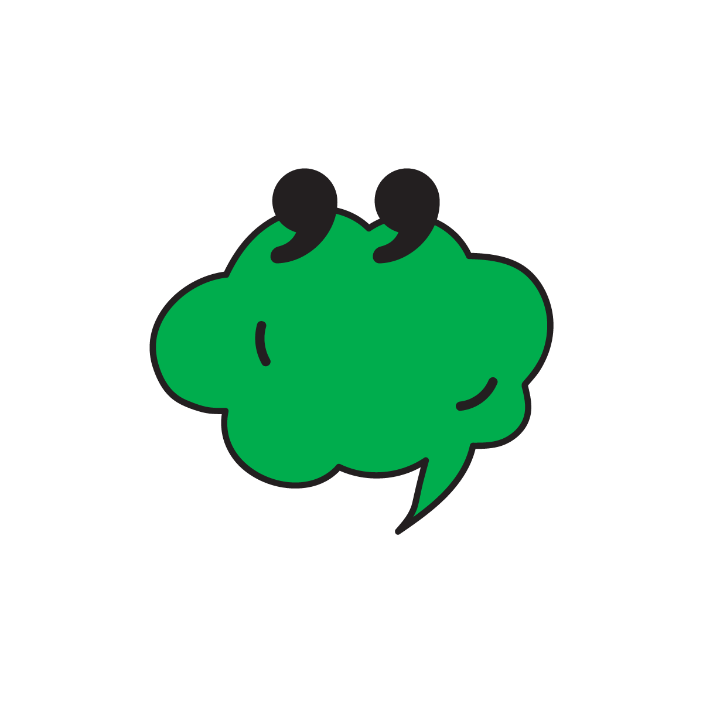

*click titles to show stickers
*drag the stickers around

01 Know The Goal
Self-compassion is not self-care, in the superficial chocolates-and-bubble-bath sense – nor is it simply being kind. Paul Gilbert, a clinical psychologist and the founder of the Compassionate Mind Foundation, says compassion is best understood as turning towards suffering, whether it is in yourself or others, and taking action to alleviate it.
Instead of finding fleeting ways to feel better, self-compassion is a readiness to engage with pain at its source. The aim is to be able to treat yourself as a doctor would, Gilbert suggests: not only taking your suffering seriously, but helping to relieve it.
02 Accept Your ‘Tricky’ Brain
Negative self-talk is not evidence of something “wrong” with us that needs to be fixed; it is a feature of being human. Our propensity to cause ourselves anguish is an evolved function of what Gilbert terms our “tricky” brain. Our complex cognitive system – able to imagine, anticipate and conceive of an objective “self” – is equally inclined to dwell on negative thoughts such as “If only I’d ...” and “I should have ...” This triggers the same fight-or-flight, physiological response as an external threat.
“Self-compassion is always a trade-off with self-criticism,” says Gilbert. For some people, the balance is so skewed that their inner critic governs who – and how – they are in the world. Not only is this a miserable existence, but it often underpins problematic relationships with drugs, alcohol, food or work, in the attempt to find some relief, as well as mental health problems including depression.
03 Tune In To Your Thoughts
Many of us have become adept at avoiding uncomfortable or unpleasant emotions – whether it is because we are distracted by our busy lives, or simply unable to cope with what we might find. The first step towards self-compassion is gaining awareness of our inner world: what triggers feelings of anger, disgust or shame; how we instinctively react to them; the content (and tone) of our internal monologue; and any blocks or resistances we encounter.
Deborah Lee, a consultant clinical psychologist and the head of trauma services at Berkshire Healthcare, describes it as creating a new “knowledge landscape” against which the pain can be recast. “In order for you to even see that you’ve got a self-critic, you’ve got to become a wise observer.”
This process may be confronting – especially, says Lee, for people with trauma, who may have absorbed their abuser’s words into their internal monologue. “Developing self-compassion is developing insight so that you can see yourself, rather than be yourself, as such. It’s an ability to feel safe as opposed to traumatised – to develop the flexibility in your mind to develop a compassionate lens.”
04 Support Your Mind With Your Body
In his practice, Gilbert shows patients how to ground themselves during their “guided discovery” with breath, muscle relaxation or mindfulness exercises. (The Calm and Headspace apps have guided meditations for compassion; there are also pdf and audio resources on the Compassionate Mind Foundation’s website.)
Gilbert recommends soothing rhythm breathing, which is shown to alleviate stress and anxiety through its effect on the autonomic nervous system. With your shoulders, back and chest open, slow and deepen the breath to about five breaths a minute. The key is to maintain the smoothness of breath: five (or four, or six – just be consistent) seconds in, the same again out.
05 Step Outside Yourself
Bell, now a psychotherapist working within the NHS in Manchester, says it is helpful to understand self-criticism as a dialogue between two aspects of the self. “There’s one part of you that’s really attacking, angry and hostile, and there’s another part of you that’s receiving it and feeling upset and hurt.”
By seeing it as a relationship, you can step out of it and “relate to the conflict in a different way,” he says. In therapy, clients might differentiate between these aspects of the self by sitting in different chairs to give voice to them, or by personifying them with form or features.
Bell suggests imagining your inner dialogue as that of two strangers on the street, and describing their relationship: “Often people say: ‘Well, it’s abusive,’” he says. “As soon as you can see it as external from you, you can see it more clearly.” It may even shed light on your inner critic’s origins by bringing to mind your dynamic with a parent, teacher or peer.
06 Treat Yourself As You Would A Friend
Nina Savelle-Rocklin, a Los Angeles-based psychoanalyst and the author of The Binge Cure: 7 Steps to Outsmart Emotional Eating, says many of us learned to deny or smother our pain in childhood, leaving us with no idea of how to soothe ourselves in later life.
She devised the “Vary” acronym to inform her clients’ responses: “Validate, acknowledge, reassure yourself.” The first step is especially important, Savelle-Rocklin says. “We tell ourselves when we are in emotional pain or distress: ‘It’s not that bad,’ ‘It’s going to be OK,’ ‘Look on the bright side’ ... but we need to recognise within ourselves when we’re hurting.”
Savelle-Rocklin says: “If you wouldn’t say it to a friend, don’t say it to yourself.” Not using the attacking second-person voice – or judgmental words such as “normal”, “ridiculous” and “should” – in dialogue with yourself can also help.
07 Watch Your Tone
It is not just what your inner monologue says – how it says it matters, too. Savelle- Rocklin recalls a client attempting to comfort herself in a defeated tone: “‘It’s going to be OK, it’s not that bad’ – she sounded as if she was reciting statistics.”
Speaking to yourself with warmth and kindness can “feel like a verbal hug” by triggering the physiological memory of feeling safe, says Savelle-Rocklin. Maintaining an open, upright posture and friendly facial expression can similarly influence your mind, even if it doesn’t reflect how you feel, says Gilbert.
08 Turn Up Another Voice
It is unrealistic to expect to silence your inner critic – but you can, as Bell did, train up another voice to counter it. Building a new monologue is “more positive and hopeful than thinking: ‘I’ve got to battle the critic’”, he says. He suggests starting by imagining a friend or family member who cares about you answering on your behalf.
Negative self-talk can also be reframed as a well-meaning coach or protector, or simply an indicator of mental state. Bell has come to see his critical voice as a “red flag” that he is feeling vulnerable and in need of some care. “The function of it has changed ... You can then use it to your benefit.”
09 Foster The Flows of Compassion
Compassion has as much to do with our relationships to other people as with ourselves, says Gilbert. Fostering connection and ways we can care for others reorganises our tricky brains to draw meaning from these relationships, instead of the self. When we feel supported by others, and safe, we feel better able to extend that to others.
The aim is to create a “compassionate mindset” where we not only feel compassion for ourselves and others, but are open to receiving it too, says Gilbert. “Self-compassion is really recognising what it is to be human: what our basic needs are, which is a sense of connectedness, and what moves us away from that.”
10 Acknowledge The Forces Against You
The difficulty in fostering self-compassion is that much of modern life is geared towards competition – from our economic system, modelled around the assumption of scarcity, to our entertainment, where reality television contestants fight to avoid elimination.
All of this triggers our threat system, bringing out the worst in our primitive brains. A tenet of “compassion-focused therapy”, which Gilbert developed, is recognising that self-criticism is an entirely reasonable response to “swimming in a river that we shouldn’t be swimming in”, he says.
“What tends to lie under self-criticism is this fear of not being good enough, being dismissed or devalued, seen as undesirable – but we live in a society that is constantly, from the day we are born, judging, evaluating, rating and ranking us ... Nobody teaches us how to deal with suffering,” he says.
11 Embrace The Practice
Lee says learning to be compassionate takes daily discipline, just like physical fitness. “If you want to feel the benefits ... you have to put the work in.” But, she adds, the hardest part is granting yourself the permission to do it and accepting that you deserve to be at peace with yourself.
Making that commitment marks the start of a “lifelong journey”, says Lee. She tells her patients that the longest relationship they will ever have is with themselves – “so would you like to take your self-critic with you, or your compassionate friend?”
In the UK, the charity Mind is available on 0300 123 3393 and Childline on 0800 1111. In the US, Mental Health America is available on 800-273-8255. In Australia, support is available at Beyond Blue on 1300 22 4636, Lifeline on 13 11 14, and at MensLine on 1300 789 978.
01 Know The Goal
Self-compassion is not self-care, in the superficial chocolates-and-bubble-bath sense – nor is it simply being kind. Paul Gilbert, a clinical psychologist and the founder of the Compassionate Mind Foundation, says compassion is best understood as turning towards suffering, whether it is in yourself or others, and taking action to alleviate it.
Instead of finding fleeting ways to feel better, self-compassion is a readiness to engage with pain at its source. The aim is to be able to treat yourself as a doctor would, Gilbert suggests: not only taking your suffering seriously, but helping to relieve it.
02 Accept Your
‘Tricky’ Brain
Negative self-talk is not evidence of something “wrong” with us that needs to be fixed; it is a feature of being human. Our propensity to cause ourselves anguish is an evolved function of what Gilbert terms our “tricky” brain. Our complex cognitive system – able to imagine, anticipate and conceive of an objective “self” – is equally inclined to dwell on negative thoughts such as “If only I’d ...” and “I should have ...” This triggers the same fight-or-flight, physiological response as an external threat.
“Self-compassion is always a trade-off with self-criticism,” says Gilbert. For some people, the balance is so skewed that their inner critic governs who – and how – they are in the world. Not only is this a miserable existence, but it often underpins problematic relationships with drugs, alcohol, food or work, in the attempt to find some relief, as well as mental health problems including depression.
03 Tune In To Your
Thoughts
Many of us have become adept at avoiding uncomfortable or unpleasant emotions – whether it is because we are distracted by our busy lives, or simply unable to cope with what we might find. The first step towards self-compassion is gaining awareness of our inner world: what triggers feelings of anger, disgust or shame; how we instinctively react to them; the content (and tone) of our internal monologue; and any blocks or resistances we encounter.
Deborah Lee, a consultant clinical psychologist and the head of trauma services at Berkshire Healthcare, describes it as creating a new “knowledge landscape” against which the pain can be recast. “In order for you to even see that you’ve got a self-critic, you’ve got to become a wise observer.”
This process may be confronting – especially, says Lee, for people with trauma, who may have absorbed their abuser’s words into their internal monologue. “Developing self-compassion is developing insight so that you can see yourself, rather than be yourself, as such. It’s an ability to feel safe as opposed to traumatised – to develop the flexibility in your mind to develop a compassionate lens.”
04 Support Your Mind
With Your Body
In his practice, Gilbert shows patients how to ground themselves during their “guided discovery” with breath, muscle relaxation or mindfulness exercises. (The Calm and Headspace apps have guided meditations for compassion; there are also pdf and audio resources on the Compassionate Mind Foundation’s website.)
Gilbert recommends soothing rhythm breathing, which is shown to alleviate stress and anxiety through its effect on the autonomic nervous system. With your shoulders, back and chest open, slow and deepen the breath to about five breaths a minute. The key is to maintain the smoothness of breath: five (or four, or six – just be consistent) seconds in, the same again out.
05 Step Outside
Yourself
Bell, now a psychotherapist working within the NHS in Manchester, says it is helpful to understand self-criticism as a dialogue between two aspects of the self. “There’s one part of you that’s really attacking, angry and hostile, and there’s another part of you that’s receiving it and feeling upset and hurt.”
By seeing it as a relationship, you can step out of it and “relate to the conflict in a different way,” he says. In therapy, clients might differentiate between these aspects of the self by sitting in different chairs to give voice to them, or by personifying them with form or features.
Bell suggests imagining your inner dialogue as that of two strangers on the street, and describing their relationship: “Often people say: ‘Well, it’s abusive,’” he says. “As soon as you can see it as external from you, you can see it more clearly.” It may even shed light on your inner critic’s origins by bringing to mind your dynamic with a parent, teacher or peer.
06 Treat Yourself As You
Would A Friend
Nina Savelle-Rocklin, a Los Angeles-based psychoanalyst and the author of The Binge Cure: 7 Steps to Outsmart Emotional Eating, says many of us learned to deny or smother our pain in childhood, leaving us with no idea of how to soothe ourselves in later life.
She devised the “Vary” acronym to inform her clients’ responses: “Validate, acknowledge, reassure yourself.” The first step is especially important, Savelle-Rocklin says. “We tell ourselves when we are in emotional pain or distress: ‘It’s not that bad,’ ‘It’s going to be OK,’ ‘Look on the bright side’ ... but we need to recognise within ourselves when we’re hurting.”
Savelle-Rocklin says: “If you wouldn’t say it to a friend, don’t say it to yourself.” Not using the attacking second-person voice – or judgmental words such as “normal”, “ridiculous” and “should” – in dialogue with yourself can also help.
07 Watch Your Tone
It is not just what your inner monologue says – how it says it matters, too. Savelle- Rocklin recalls a client attempting to comfort herself in a defeated tone: “‘It’s going to be OK, it’s not that bad’ – she sounded as if she was reciting statistics.”
Speaking to yourself with warmth and kindness can “feel like a verbal hug” by triggering the physiological memory of feeling safe, says Savelle-Rocklin. Maintaining an open, upright posture and friendly facial expression can similarly influence your mind, even if it doesn’t reflect how you feel, says Gilbert.
08 Turn Up Another
Voice
It is unrealistic to expect to silence your inner critic – but you can, as Bell did, train up another voice to counter it. Building a new monologue is “more positive and hopeful than thinking: ‘I’ve got to battle the critic’”, he says. He suggests starting by imagining a friend or family member who cares about you answering on your behalf.
Negative self-talk can also be reframed as a well-meaning coach or protector, or simply an indicator of mental state. Bell has come to see his critical voice as a “red flag” that he is feeling vulnerable and in need of some care. “The function of it has changed ... You can then use it to your benefit.”
09 Foster The Flows of
Compassion
Compassion has as much to do with our relationships to other people as with ourselves, says Gilbert. Fostering connection and ways we can care for others reorganises our tricky brains to draw meaning from these relationships, instead of the self. When we feel supported by others, and safe, we feel better able to extend that to others.
The aim is to create a “compassionate mindset” where we not only feel compassion for ourselves and others, but are open to receiving it too, says Gilbert. “Self-compassion is really recognising what it is to be human: what our basic needs are, which is a sense of connectedness, and what moves us away from that.”
10 Acknowledge The
Forces Against You
The difficulty in fostering self-compassion is that much of modern life is geared towards competition – from our economic system, modelled around the assumption of scarcity, to our entertainment, where reality television contestants fight to avoid elimination.
All of this triggers our threat system, bringing out the worst in our primitive brains. A tenet of “compassion-focused therapy”, which Gilbert developed, is recognising that self-criticism is an entirely reasonable response to “swimming in a river that we shouldn’t be swimming in”, he says.
“What tends to lie under self-criticism is this fear of not being good enough, being dismissed or devalued, seen as undesirable – but we live in a society that is constantly, from the day we are born, judging, evaluating, rating and ranking us ... Nobody teaches us how to deal with suffering,” he says.
11 Embrace The
Practice
Lee says learning to be compassionate takes daily discipline, just like physical fitness. “If you want to feel the benefits ... you have to put the work in.” But, she adds, the hardest part is granting yourself the permission to do it and accepting that you deserve to be at peace with yourself.
Making that commitment marks the start of a “lifelong journey”, says Lee. She tells her patients that the longest relationship they will ever have is with themselves – “so would you like to take your self-critic with you, or your compassionate friend?”
In the UK, the charity Mind is available on 0300 123 3393 and Childline on 0800 1111. In the US, Mental Health America is available on 800-273-8255. In Australia, support is available at Beyond Blue on 1300 22 4636, Lifeline on 13 11 14, and at MensLine on 1300 789 978.
“It’s this ability, when we are suffering, to stand back and say: ‘What is this about, why do I feel this? And what would be the most helpful thing for me now?’”
UK 030-0123-3393
US 800-273-8225
AUS 130-022-4636